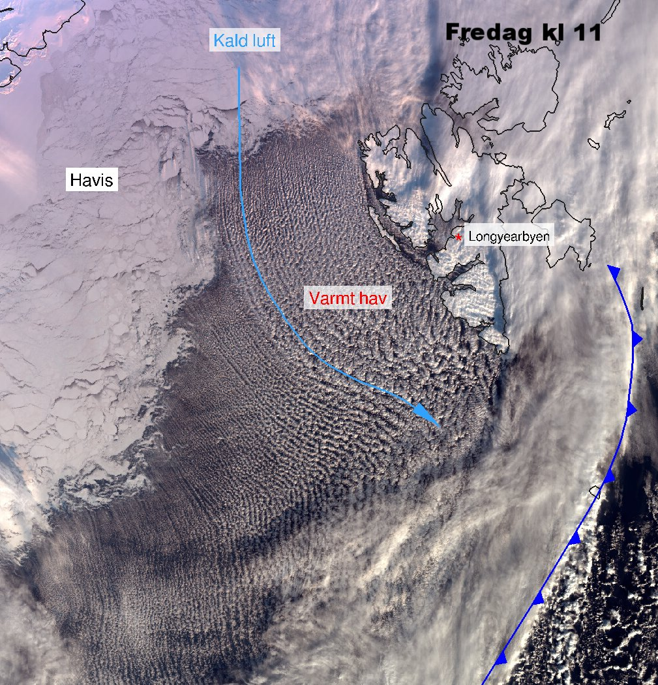

GFI seminar | Bergen, Norway | 1 June 2017
A polar low
and how surface conditions can influence its development
Denis Sergeev,
Ian Renfrew, Thomas Spengler


Live demo: https://dennissergeev.github.io/gfi2017
Where do polar lows occur?
- Cold-air outbreaks occur in the North Atlantic, resulting in
- Hundreds of small mesoscale cyclones per year in each region
- There, dozens of intense polar lows develop mostly in winter


Met Office Unified Model simulation

Future plans
- Run the model for other polar low cases (STARS database)
- Investigate how exactly the sea ice cover affects polar low dynamics